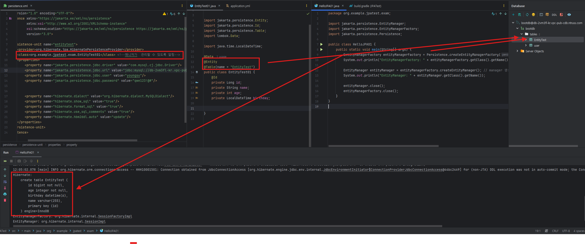
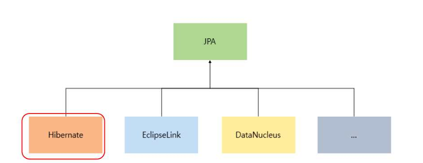
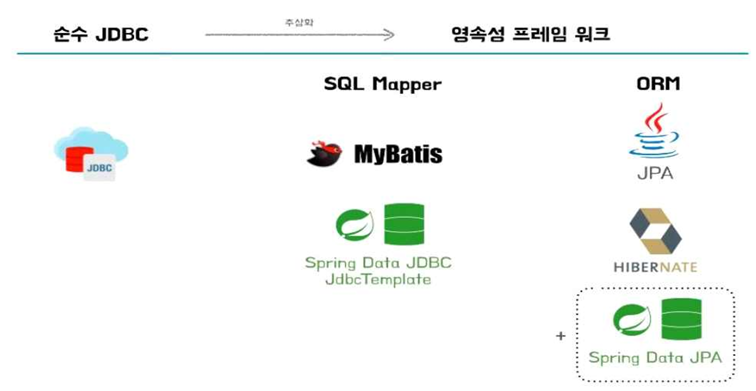
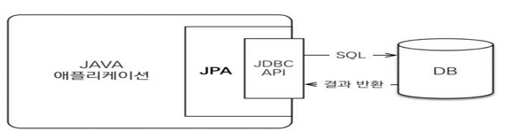
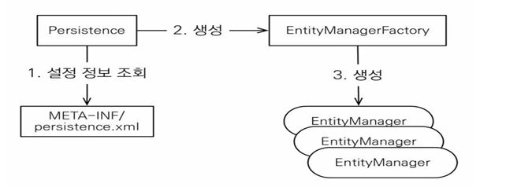
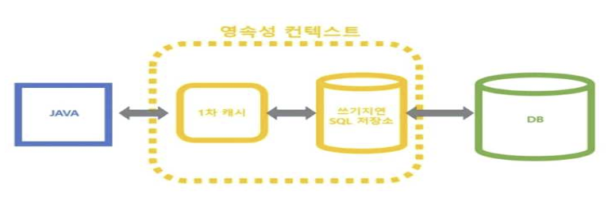
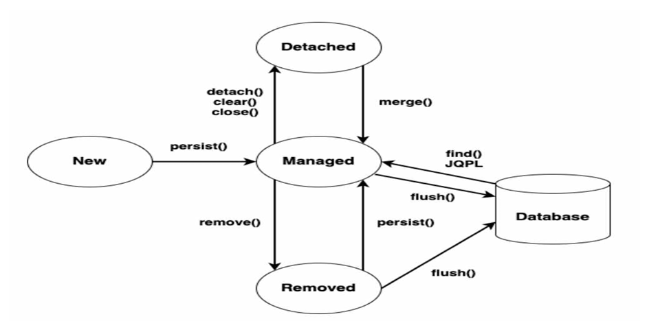
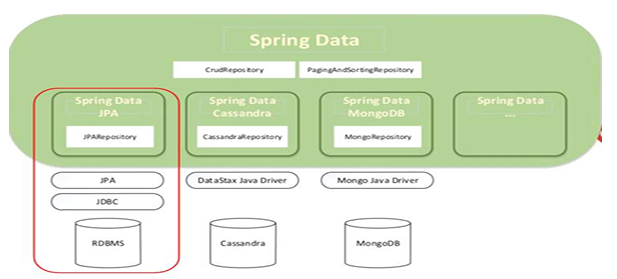
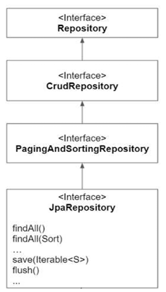
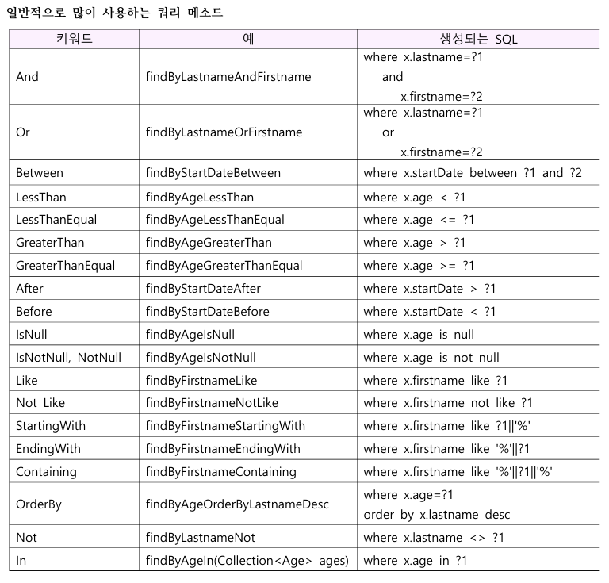

JDBC만을 위한 영속 계층
- JDBC는 Java에서 데이터 베이스에 접속하고 데이터 처리구현에 사용되는 Java API이다.
- JDBC의 장점은 각각의 DBMS가 제공하는 JDBC 드라이버를 이용하여 DBMS의 종류와 상관없이 하나의 JDBC API를 이용하여 DB 작업을 처리할 수 있다는 것이다.
- 그러나 JDBC만을 이용하여 개발을 할 경우 단점이 꽤 많다.
- 단점
- 간단한 SQL을 실행함에도 중복된 코드를 반복적으로 사용
- DB에 따라 일관성 없는 정보를 가진채로 Checked Exception(SQLException) 처리
- 연결과 같은 공유 자원을 제대로 반환하지 않으면 시스템의 자원 부족 현상 발생
그래서 이런 복잡하고 번거로운 작업을 해결하기 위해 데이터베이스와 연동되는 시스템을 빠르게 개발할 수 잇는 Persistence Framework를 사용하기 시작하였다.
SQL Mapper을 이용한 영속 계층
- SQL Mapper는 객체와 SQL을 매핑하여 데이터를 객체화하는 Persistence Framework이다.
- 즉, 테이블과 객체 간의 관계를 매핑하는 것이 아닌 직접 작성한 SQL문의 결과와 객체의 필드를 매핑하는 것이 메인 컨셉이다.
- SQL Mapper를 이용하면 기존에 JDBC만을 이용했을 때보다 코드가 간결해지고 유지보수성이 향상된다.
- 그러나 SQL Mapper가 JDBC만을 사용했을 때보다 많은 불편함을 해소해줬음에도 여전히 문제가 있다.
- 단점
- SQL을 직접 작성하기에 특정 DB에 종속적
- 비슷한 CRUD SQL 작성 및 DAO를 반복적으로 개발
- 테이블 필드 변경 시 유지 보수가 힘듬
즉, 코드상에서는 SQL과 JDBC API를 분리했어도 논리적으로 강한 의존성을 가지고 있게 되며, SQL에 의존적인 개발을 해야 하는 문제는 여전히 발생한다.
ORM을 이용한 영속계층
- ORM이란 Object Relational Mapping, 객체-관계 매핑의 줄임말로 OOP에서 객체를 구현한 클래스와 - RDBMS에서 사용하는 테이블을 자동으로 매핑하는 것을 의미한다.
- ORM은 객체 간의 관계를 바탕으로 정해진 메서드를 호출하면 관련 SQL문을 자동으로 생성하여 직관적으로 데이터를 조작하게 하는 방법으로 개발자의 불편함을 해소한다.
- Java ORM의 대표적인 기술은 JPA이다.
- 원래 JPA 기술이 나오기 전까지는 EJB(Entity Bean)이라는 JAva 표준 기술이 있었다.
- 하지만 워낙 복잡하다 보니 Gavin King이라는 개발자 하이버네이트라는 오픈 소스를 만들어냈고, Java진영에서 Gavin King을 영입하여 hibernate 기반의 Java ORM 표준인 JPA를 만들었다.
JPA 란?

- 데이터베이스는 객체 구조와는 다른 데이터 중심의 구조를 가지므로 객체를 데이터베이스에 직접 저장하거나 조회할 수 없다.
- 따라서 개발자가 객체 지향 어플리케이션과 데이터베이스 중간에서 SQL과 JDBC API를 사용해서 변환 작업 (객체 → 데이터 베이스)을 직접 해줘야 한다.
- JPA는 Java Persistence API의 약자로서, 자바 객체와 관계형 데이터 베이스의 데이터(테이블)를 매핑하기 위해 사용되는 ORM 기술의 Java 표준 명세이다.
- 클래스와 테이블은 기존부터 호환 가능성을 두고 만들어진 것이 아니므로 불일치가 발생하는데 이를 ORM을 통해서 객체 간의 관계를 바탕으로 SQL문을 자동 생성하여 불일치를 해결한다.
- ORM을 사용하면 SQL문을 구현할 필요 없이 객체를 통해 간접적으로 데이터베이스를 조작할 수 있게 된다.
- JPA는 Java ORM에 대한 API 표준 명세이며, 인터페이스 모음이다. 따라서 구현체가 없으므로 사용하기 위해서는 ORM 프로임워크를 선택해야 한다. 다양한 프레임 워크가 존재하지만 가장 대중적인 것은
hibernates이다.

- Entity란 DB 테이블의 데이터를 OOP 스럽게 다루기 위해 사용하는 DB 테이블의 모델링 클래스이다.
- DB 테이블의 컬럼들에 매핑되는 필드를 선언하고 기본 생성자, settter, getter등의 메서드, 그리고 PK에 매핑되는 Identity 역할의 Key 필드(@Id)를 선언한다.
Persistence Framework
JDBC 프로그래밍에서 경험하게 되는 복잡함이나 번거로움 없이 간단한 작업만으로 데이터베이스와 연동되는 시스템을 빠르게 개발할 수 있다.
일반적으로 SQL Mapper와 ORM으로 나눠진다.

- SQL Mapper
- 직접 작성한 SQL 문장으로 데이터 베이스 데이터를 다룬다.
- ex ) Mybatis, JdbcTemplates(Spring)
- 직접 작성한 SQL 문장으로 데이터 베이스 데이터를 다룬다.
- ORM
- 객체를 통해서 간접적으로 데이터 베이스의 데이터를 다룬다.
- 객체와 관계형 데이터 베이스의 데이터를 자동으로 맵핑시킨다.
- ex ) JPA, hibernate
- JPA는 애플리케이션과 JDBC 사이에서 동작한다.
- JPA 내부에서 JDBC API를 사용하여 SQL을 호출하여 DB와 통신한다.
- 개발자가 ORM 프레임워크에 저장하면 적절한 Insert SQL을 생성해 데이터 베이스에 저장해주고, 검색을 하면 적절한 Select SQL을 생성해 결과를 객체에 매핑하고 전달한다.

Entity
- JPA에서 엔티티란 DB 테이블에 대응하는 클래스이고 엔티티 객체는 DB 테이블의 데이터(하나의 행)이다
- @Entity 어노테이션이 붙은 클래스를 JPA에서는 엔티티라고 부르며, 이 엔티티는 영속성 컨텍 스트에 담겨 EntityManager에 의해서 관리된다
- 어노테이션
- @Entity
- 클래스 레벨에 적용한다.
- 해당 클래스를 테이블과 매핑한다고 JPA에게 알려주는 역할을 한다.
- 해당 어노테이션이 적용된 클래스를 엔티티 클래스라고 한다
- @Table
- 클래스 레벨에 적용한다.
- 엔티티 클래스에 매핑할 테이블 이름을 JPA에게 알려주는 역할을 한다.
- @Table(name = "테이블이름")
- 해당 어노테이션을 생략하면 클래스 이름에서 모든 글자를 소문자로 변경하여 테이블을 생성한다.
- @Id
- 필드 레벨에 적용한다.
- 엔티티 클래스의 필드를 테이블의 기본 키 (Primary Key)에 매핑한다.
- 해당 어노테이션이 적용된 필드를 식별자 필드라고 한다.
- @Column
- 필드 레벨에 적용한다.
- 해당 필드를 테이블의 지정된 컬럼에 매핑한다.
- name 속성으로 매핑할 컬럼의 이름을 지정하며 nullable, unique, length 등도 설정 가능하다.
- @Column(name = "매핑할 컬럼명")
- name 속성을 생략하거나 @Column 어노테이션을 생략하면 필드명을 그대로 사용해서 컬럼명으로 매핑한다.
- 이름이 age인 필드에 매핑 정보를 생략하면, age 컬럼으로 자동 매핑한다.
- 대소문자를 구분하는 DB를 사용한다면 @Column 을 사용하여 명시적으로 매핑해야 한다.
- @Entity
EntityManager 객체 생성과 Entity 클래스 정의

persistence.xml파일을 통해서 JPA 관련 정보를 설정한다.- resources의 META-INF에 추가
- 영속성 컨텍스트에서 관련 SQL을 데이터베이스에 전달할 때는 데이터베이스별 Dialect(방언)을 적용한다.
<?xml version="1.0" encoding="UTF-8"?> <persistence xmlns="https://jakarta.ee/xml/ns/persistence" xmlns:xsi="http://www.w3.org/2001/XMLSchema-instance" xsi:schemaLocation="https://jakarta.ee/xml/ns/persistence https://jakarta.ee/xml/ns/persistence/persistence_3_0.xsd" version="3.0"> <persistence-unit name="entitytest"> // 영속성 <provider>org.hibernate.jpa.HibernatePersistenceProvider</provider> // JPA 구현체로 Hibernate를 사용 <class>org.example.jpatest.exam.EntityTest01</class> <!--매니저가 관리할 수 있도록 알림--> <properties> <property name="jakarta.persistence.jdbc.driver" value="com.mysql.cj.jdbc.Driver"/> <property name="jakarta.persistence.jdbc.url" value="jdbc:mysql://db-2vm3fl-kr.vpc-pub-cdb.ntruss.com:3306/bootdb"/> <property name="jakarta.persistence.jdbc.user" value="youngsu"/> <property name="jakarta.persistence.jdbc.password" value="qwe123!@#"/> // dialect 설정 <property name="hibernate.dialect" value="org.hibernate.dialect.MySQLDialect"/> <property name="hibernate.show_sql" value="true"/> // 쿼리를 콘솔에 출력 <property name="hibernate.format_sql" value="true"/> <property name="hibernate.use_sql_comments" value="true"/> <property name="hibernate.hbm2ddl.auto" value="update"/> </properties> </persistence-unit> </persistence>- resources의 META-INF에 추가
- EntityManagerFactory 객체를 생성한다. ( <persistence-unit> 태그의 이름 정보 지정)
- EntityManager 객체를 생성하여 Entity 객체를 영속성 컨텍스트를 통해 관리한다.
public class EntityTestApp01 { public static void main(String[] args) { EntityManagerFactory entityManagerFactory = Persistence.createEntityManagerFactory("entitytest"); EntityManager entityManager = entityManagerFactory.createEntityManager(); entityManager.getTransaction().begin(); // 트랜잭션 시작 EntityTest01 entityTest01; for(int i=1;i<=5;i++){ entityTest01 = new EntityTest01(); entityTest01.setName("홍길동"+i); entityTest01.setAge((int) (Math.random()*20+20)); entityTest01.setBirthday(LocalDateTime.now()); entityManager.persist(entityTest01); } // persist는 영속성 컨텍스트로 entityManager.getTransaction().commit(); // DML commit 시켜줌 entityManager.close(); entityManagerFactory.close(); } }
EntityManagerFactory
- 데이터베이스와 상호 작용을 위한
EntityManager 객체를 생성하기 위해 사용되는 객체로서 애플리케이션에서 한 번만 객체를 생성하고 공유해서 사용한다. - Thread-Safe 하므로 여러 스레드에서 동시에 접근해도 안전하다.
- EntityManagerFactory 객체를 통해 생성되는 모든 EntityManager 객체는 동일한 데이터베이스에 접속한다.
EntityManager
- Entity 객체를 관리하는 객체이다.
- 데이터베이스에 대한 CRUD 작업은 모두 영속성 컨텍스트를 사용하는 EntityManager 객체를 통해 이루어진다.
- 동시성의 문제가 발생할 수 있으니 여러 스레드가 공유하지 않는다.
- 모든 데이터 변경은 트랜잭션 안에서 이루어져야 한다. (트랜잭션을 시작하고 처리해야 함)
- EntityManager 메서드
- flush()
- 영속성 컨텍스트(Persistence Context)의 변경 내용을 데이터베이스에 반영한다.
- 일반적으로는 flush() 메서드를 직접 사용하지는 않고, Java 애플리케이션에서 커밋 명령이 들어왔을 때 자동으로 실행된다.
- detach()
- 특정 Entity를 준영속 상태(영속 컨텍스트의 관리를 받지 않음)로 바꾼다.
- clear()
- Persistence Context를 초기화
- close()
- Persistence Context를 종료
- merge()
- 준영속 상태의 엔티티를 이용해서 새로운 영속 상태의 엔티티를 반환
- find()
- 식별자 값(Key 필드)을 통해 Entity를 찾는다.(DB 테이블의 데이터 또는 행을 찾는다.)
- persist()
- 생성된 Entity 객체를 영속성 컨텍스트(Persistence Context)에 저장
- remove()
- 식별자 값을 통해 영속성 컨텍스트(Persistence Context)에서 Entity 객체를 삭제
- flush()
Pesistence Framework 실습
- EntityTest01
@Data @Entity @Table(name = "EntityTest") public class EntityTest01 { @Id @GeneratedValue(strategy = GenerationType.IDENTITY) // auto increment 부여됨 private Long id; private String name; private int age; private LocalDateTime birthday; }@Table(name = "EntityTest")를 통해 테이블 이름을 지정할 수 있다.
영속성 컨텍스트(persistence context)

- 어플리케이션과 데이터베이스 사이에 존재하는 논리적인 개념으로 엔티티를 저장하고 관리하는 영역이다.
- EntityManager 객체당 한 개의 영속성 컨텍스트가 사용되며 EntityManager 객체를 통해서만 접근이 가능하다.
- 영속성 컨텍스트는 엔티티들을 식별자(id) 값으로 구분하며 1차 캐시에 보관한다.
쓰기 지연을 지원하여 커밋하기 전까지는 DB 테이블에 저장하지 않고 SQL 저장소에 관련 SQL 문 만 보관하며트랜잭션을 커밋하는 시점에 영속성 컨텍스트를 플러시하여 보관되어 있던 SQL 문 들을 DB 서버에 전송한 후 커밋 처리한다- 플러시한 다음에는 엔티티 상태들은 복사하여 저장한 스냅샷이 존재하며 스냅샷과 엔티티를 비교해 변경된 엔티티를 찾고, 있다면 수정 쿼리를 SQL 저장소에 보관한다.
- 영속성 컨텍스트에 존재하는 엔티티들의 플러시 시점
- entityManger.flush() 로 플러시 기능을 직접 호출
- 트랜젝션 커밋(commit) 시 entityManger.flush() 메서드 자동 호출됨
- JPQL 쿼리 실행 시 entityManger.flush() 메서드가 자동 호출됨
영속성 컨텍스트 기능
- 1차 캐시
- 영속 상태의
Entity는 모두 영속성 컨텍스트에HashMap(key(@Id) = value(Entity))로 저장된다. - 따라서 식별자
(@Id)가 반드시 있어야 한다.
Member member = new Member(); member.setId("member1"); // 직접 id 값을 초기화 암으로써 준영속상태로 인지한다. member.seUsername("회원1"); // 엔티티 영속(1차 캐시 저장) em.persist(member); // 1차 캐시에서 조회 em.find(Member.class, "member1");- 아직 flush 가 일어나지 않아 1차 캐시에 저장된다. 추후 flush 를 통해 db 저장된다.
- 만약에 1차 캐시에 없으면 db 조회 후 1차 캐시에 저장한 후 반환한다.
- 보통 entityManager 는 transaction 단위로 만들고 종료되므로 em 종료시 캐시도 날라간다. 순간적인 성능 이점보다는 비즈니스 로직이 굉장히 복잡할때 좋다.
- 전체 단위로 2차 캐시가 있다.
- 영속 상태의
- 동일성 보장
Member a = em.find(Member.class, "member1"); Member b = em.find(Member.class, "member1"); System.out.println(a == b); // true 반환- 1차 캐시가 있기 때문에 영속 엔티티의 동일성(메모리 주소가 같음을 의미)을 보장해 준다.
- 1차 캐시로 반복 가능한 읽기(REPEATABLE READ) 등급의 트랜잭션 격리 수준을 db 가 아닌 애플리케이션 차원에서 제공한다.
- 트랙잭션을 지원하는 쓰기 지연
- 쓰기 지연 SQL 저장소가 존재한다.
- entity 분석 후 insert 쿼리를 생성하고 쓰기 지연 SQL 저장소에 쌓는다
- commit 하는 순간 쿼리들이 flush 되면서 db 로 날아간다
- 변경 감지(dirty checking)
- flush 발생시 entity 와 스냅샷을 비교한다. 스냅샷을 처음 db 에서 읽어왔을때 내용이다.
- 바뀐내용이 있으면 쓰기 지연 SQL 저장소에서 update 쿼리를 작성하여 commit 시 db 에 적용한다.
- 플러시(flush)
- 플러시는 영속성 컨텍스트의 변경 내용을 db 에 반영한다. 즉 변경 내용을 db 와 동기화 하는 것이다.
엔티티 생명주기

- Entity에는 아래와 같은 4가지의 상태가 존재한다.
- 비영속(new/transient): 영속성 컨텍스트와 전혀 관계가 없는 상태
- 최초에 member 객체를 생성한 상태 = new
- db 동기화 되지 않으며 할당된 식별자 값이 사용되지 않거나 식별자 값이 할당 되지 않은 상태
Member member = new Member();
- 영속(managed): 영속성 컨텍스트에 저장된 상태
- Entity 에 연관된 식별자가 있다.( ⭐ 내부적으로 HashMap 으로 Entity 관리를 위해 key 값 필수)
- 방금 등록한 entity 는 비영속 상태로 key (id)가 null 이므로 보통 Entity 객체에 선언된 @GeneratedValue 를 참조하여 id 를 생성한다.
- MYSQL 은 auto_increment 를 지원하므로 이 전략을 사용하기도 한다.(IDENTITY)
📄 자세한 설명
엔티티와 식별자
- 엔티티(Entity): 데이터베이스 테이블의 한 행(row)을 나타내는 객체입니다.
- 식별자(Identifier): 엔티티를 고유하게 식별하는 필드로, 보통 Primary Key에 해당합니다.
내부적으로
HashMap을 사용하는 이유ORM 프레임워크(예: JPA)는 엔티티 객체를 관리하기 위해 **영속성 컨텍스트(Persistence Context)**를 사용합니다. 이 컨텍스트는 엔티티를 메모리 내에서 관리하며, 이를 위해 내부적으로
HashMap과 같은 자료구조를 사용합니다.- 키(Key): 엔티티의 식별자(Primary Key)
- 값(Value): 엔티티 객체 자체
예시로 이해하기
- 엔티티 생성 및 영속화
- 엔티티 생성
person = new Person(); person.setName("홍길동1"); person.setAge(25); entityManager.persist(person); - 영속성 컨텍스트 상태
HashMap { temporaryKey1: person (id=null, name=홍길동1, age=25) } // ex) HashMap temporaryKeysMap = { 0x1a2b3c: person1, 0x4d5e6f: person2, ... }
- 엔티티 생성
- 트랜잭션 커밋 후
- ID 값 할당: 데이터베이스에서 ID
1이 생성되고 엔티티에 설정됩니다. - HashMap 키 업데이트
HashMap { 1L: person (id=1, name=홍길동1, age=25) }
- ID 값 할당: 데이터베이스에서 ID
- 이후 엔티티 조회 및 관리
- 엔티티 조회 시: ID
1L로HashMap에서 엔티티를 찾아 반환합니다. - 엔티티 변경 시: 변경 사항은 영속성 컨텍스트에서 추적되어 다음 트랜잭션 커밋 시 데이터베이스에 반영됩니다.
- 엔티티 조회 시: ID
- db 와 논리적으로 동기화 되있는상태(물리적으로 아닐수 있다)
em.persist(member);- entity manager. persist 하면 영속 상태로(managed)
- Entity 에 연관된 식별자가 있다.( ⭐ 내부적으로 HashMap 으로 Entity 관리를 위해 key 값 필수)
- 준영속(detached): 영속성 컨텍스트에 저장되었다가 분리된 상태
- 영속성 컨텍스트에 저장되었다가 분리된 상태, 더 이상 영속 상태의 엔티티가 아니다.
detach하면 다시 영속성 컨텍스트와 관련이 없어진다.em.detach(member); // 엔티티를 영속성 컨텍스트에서 분리 em.clear(); // 영속성 콘텍스트를 비움 em.close(); // 영속성 콘텍스트를 종료- 준영속이므로 연속성 컨텍스트가 제공하는 어떠한 기능도 사용할수 없다 (1차캐시, 쓰기지연, 변경감지, 지연로딩 등...)
- Entity에 연관된 식별자는 있지만 더 이상 영속성 컨텍스트와 연관되지 않는다.
- 영속성 컨텍스트에 저장되었다가 분리된 상태, 더 이상 영속 상태의 엔티티가 아니다.
- 삭제(removed): 삭제된 상태
- 엔티티가 영속성 컨텍스트와 db 에서 삭제되도록 예약된 상태 최종적으로 모두 삭제
em.remove(member);- 영속성 컨텍스트에서 삭제가 예약되고 이후
flush호출시 영속성 컨텍스트에서 제거됨과 동시에 db 에 delete 쿼리가 발생한다.
준영속과 비영속의 차이점
| 준영속 | 비영속 |
| 식별자가 반드시 존재 | 식별자가 없을 수도 있다. |
| 개발 초기에 직접 id를 초기화해 생성하면 비영속이 아닌 준 영속 상태로 간주 |
JPQL 이란?
- JPA에서 엔티티 객체를 조회할 때 사용하는 객체지향 쿼리이다.
- 문법은 SQL과 비슷하고 ANSI 표준 SQL이 제공하는 기능을 유사하게 지원한다.
- SQL은 데이터베이스 테이블을 대상으로, JPQL은
엔티티 객체를 대상으로 쿼리한다. - JPQL은 SQL을 추상화해서 특정 데이터베이스에 의존하지 않으며 실행 시 SQL로 변환된다.
JPA 기본키 매핑
- 기본키(primary key)를 매핑하는 방법은 2가지로 직접 할당과 자동 생성이 있다.
- 직접 할당은 엔티티에 @Id 어노테이션만 사용해서 직접 할당하는 것이다.
- 자동 생성은 엔티티에 @Id와 @GeneratiedValue를 추가하고 원하는 키 생성 전략을 선택한다.
- 자동 생성 같은 경우에는 MySQL의 AUTO_INCREMENT 같은 기능으로 생성된 값을 기본키로 사용 하는 것이다.
기본키 자동 생성 전략 - IDENTITY
- 기본키 생성을 DB에 위임하는 전략이다.
- MySQL, PostgreSQL, SQL Server, DB2에서 사용한다. (MySQL의 AUTO_INCREMENT)
기본키 자동 생성 전략 - SEQUENCE
- 유일한 값을 순서대로 생성하는 특별한 데이터베이스 오브젝트이다.
- 이 시퀀스를 사용해서 기본키를 생성하게 된다.
- 시퀀스를 지원하는 Oracle, PostgreSQL, DB2, H2 Database에서 사용할 수 있다.
JPA 연관 관계 매핑 기초
- 엔티티들은 대부분은 다른 엔티티들과 연관 관계를 맺는다.
- 데이터베이스 테이블은 외래키(FK)로 JOIN을 이용해서 관계 테이블을 참조
- 엔티티는 객체 참조를 이용해서 연관된 엔티티를 참조
- 연관 관계 매핑이란 데이터베이스 테이블의 외래 키(FK)를 객체의 참조와 매핑하는 것
- 즉, 데이터베이스 테이블의 외래키를 객체의 참조 관계로 매핑하는 것
Spring Data
- Spring Data의 목적은 기본 데이터 저장소의 특수한 특성을 유지하면서 데이터 접근을 위한 친숙하고 일관된 Spring 기반의 프로그래밍 모델을 제공하는 프로젝트이다.
- Spring Data는 데이터 접근 기술로서 relational and non-relational database, map-reduce 프레 임워크, 클라우드 기반의 서비스를 쉽게 사용할 수 있도록 해준다.
- Spring Data는 데이터베이스와 관련된 많은 하위 프로젝트(Spring Data JPA, Spring Data REST, …) 를 포함하는 포괄적인 프로젝트이다.

Spring Data JPA
- Spring Data JPA 는 Spring Framework에서 JPA를 편리하게 사용할 수 있도록 지원하는 프로젝트 로서 CRUD 처리를 위한 공통 인터페이스를 제공한다.
- Repository 개발 시 인터페이스만 작성해도 실행 시점에 Spring Data JPA가 구현(자식) 객체를 동 적으로 생성해서 주입시키므로 데이터 접근 계층을 개발할 때 구현 클래스 없이 인터페이스만 작성해도 개발을 완료할 수 있도록 지원한다.
- Spring Data JPA를 사용하기 위해 'JpaRepository<T, ID>' 인터페이스를 상속한 Repository 인터페 이스를 정의한다. 단지 인터페이스를 상속했을 뿐인데, 기본적인 메서드를 이미 정의한 상태이며 정의한 인터페이스를 구현할 필요도 없다. Spring FW가 알아서 해준다.

쿼리 메서드
JPA 쿼리 메서드는 JPA에서 데이터를 조회하거나 조작하기 위해 사용하는 방법 중 하나로, 인터페이스에 메서드 이름만으로 자동으로 SQL 쿼리를 생성하고 실행할 수 있게 해주는 기능을 제공
JPA 쿼리 메서드 특징
- 메서드 이름 기반 쿼리 생성
JPA는 메서드 이름을 해석해서 쿼리를 생성합니다. 메서드 이름은 특정한 규칙을 따르며, 메서드의 이름이 복잡할수록 더 많은 조건을 포함하는 쿼리를 생성할 수 있습니다.
- 간단한 쿼리 작성
복잡한 JPQL이나 네이티브 쿼리를 작성하지 않고도 자주 사용하는 조회 쿼리를 간단히 작성할 수 있습니다.
메서드 이름 규칙
- 기본 구조:
findBy,readBy,queryBy,countBy,deleteBy등으로 시작하고, 그 뒤에 필드명을 사용하여 조건을 정의합니다. - 예:
findByUsername(String username),findByAgeGreaterThan(int age)

테스트
📄 테스트 코드
// 내장 DB 가 H2 를 수행하지 않겠다
@AutoConfigureTestDatabase(replace = AutoConfigureTestDatabase.Replace.NONE)
// @DataJpaTest 를 사용하면 자동으로 EmbededDatabase-H2 를 사용하게 됨
// MySQL 과 같이 외부의 DB 를 연결하련느 경우엔 이 어노테이션 사용
@DataJpaTest
@TestMethodOrder(MethodOrderer.OrderAnnotation.class)
public class JPA_BoardRepositoryTest {
@Autowired
private BoardDAO boardDAO;
@BeforeEach // 각 테스트 메서드 실행 전에 호출
public void solid(){
System.out.println("-".repeat(83)); // repeat를 통해 반
}
@AfterEach
public void solid2() { // 각 테스트 메서드 실행 후에 호출
System.out.print("// ");
System.out.println("-".repeat(80));
}
@Test
public void list1() {
List<BoardEntity> list = boardDAO.findAll(); // findAll를 통해 모든 BoardEntity 조회
System.out.println("*********** list1 ***********");
list.stream().forEach(System.out::println);
}
@Test
public void list2() { // name 필드를 기준으로 오름차순 정렬
List<BoardEntity> list = boardDAO.findAll(Sort.by("name").ascending());
System.out.println("*********** list2 ***********");
list.stream().forEach(System.out::println);
}
@Test
public void list3() { // name 필드를 기준으로 내림차순 정렬
List<BoardEntity> list = boardDAO.findAll(Sort.by("name").descending());
System.out.println("*********** list3 ***********");
list.stream().forEach(System.out::println);
}
@Test
public void list4() { // 0번 페이지부터 시작하며, 한 페이지에 3개의 엔티티를 가져
Page<BoardEntity> list = boardDAO.findAll(PageRequest.of(0, 3));
System.out.println("*********** list4 ***********");
list.stream().forEach(System.out::println);
}
@Test
public void list5() { // 1번 페이지(두 번째 페이지)를 가져오며, 한 페이지에 3개의 엔티티
Page<BoardEntity> list = boardDAO.findAll(PageRequest.of(1, 3));
System.out.println("*********** list5 ***********");
list.stream().forEach(System.out::println);
}
@Test
public void list6() { // name 필드 기준으로 정렬하면서 페이징 처리된 결과를 조회
Page<BoardEntity> list = boardDAO.findAll(PageRequest.of(0, 3, Sort.by("name")));
System.out.println("*********** list6 ***********");
list.stream().forEach(System.out::println);
}
}